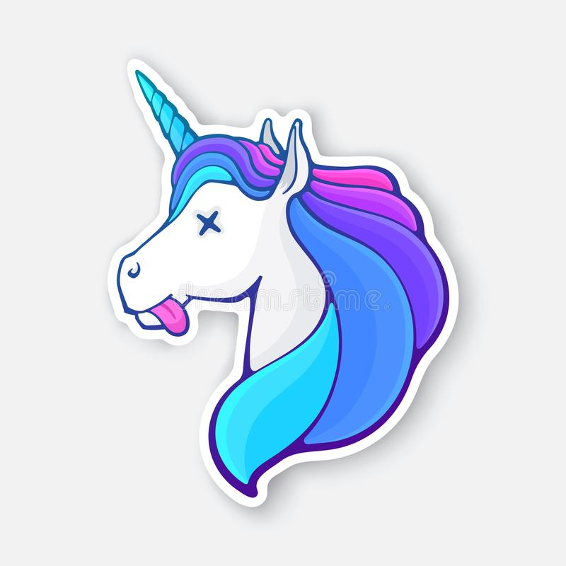

Bienvenue cher visiteur. Aujourd'hui j'ai une mission spéciale pour toi. Je te confie ma licorne. Attention, la vie d'une licorne est précieuse, ne fait pas n'importe quoi. Pour t'aider à la garder envie, voici quelques indications : ma licorne ne mange que des arc-en-ciels et se déplace de haut en bas et de droite à gauche. Utilise les flèches de ton clavier pour la faire bouger. Des flacons de poison vont croiser ton chemin, évite-les à tous prix. Bonne chance !
